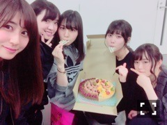

| 2016/11 29 Tue | 半分半分のケーキ。 |
ちはるーむへようこそ！

みんなで伊織と純奈のお誕生日をお祝い♡
半分半分のケーキが可愛い(﹡ˆ ˆ﹡)
伊織も純奈も、2人とも仲良しなんだ〜！
大好き♡
おめでとう♡
---------------------------♡
！ChihAnswer！
 しぐまるさん
しぐまるさん
・ちーちゃんはあったかい飲み物なら何が好き？
→ホットミルクティーとか
カフェラテは安定です。
飲むとホッとするから♪
でも最近はホットレモンにもハマってる！
酸っぱいレモンが大好きだし
はちみつレモンも好きなので
どんぴしゃりです◎
どん！！！！！！さん
・眠い時はどーやって目を覚ましますか？
→眠い時は耳たぶを力いっぱい
引っ張るといい！と言う話を聞いた日から
眠くなった時はすぐに引っ張ります。
ひなちまがよく眠そうにしているのを
見てるので教えてあげたら
早速実践してたよ◎
効いた！目覚めた！って言ってくれた！
と思う！！
みっとさん
・ちーちゃんが歌を好きになる時は歌詞から入る？曲から入る？
→曲から入る！
さらに言うと声から入るかも！
聞いていけば聞いていくほど
歌詞の深さを感じられるのですき。
おーるさん
・読書はする方ですか？
→読書大好きなんだけど
なかなか時間に余裕のある時じゃ無いと
読みきれないので
最近は全然出来ていないです...
学校がない時期は読んだりしているよ！
とももさん
・冬に食べるアイスの美味しさ分かりますよね！？
→もちろん分かりますよ！！
冬はクリーミーな味だったり、
濃厚バニラ系だったり、
まったりチョコレート系だったり、
お餅もちもち系に惹かれるんだよね...！
あったかいお部屋で、
冷たいアイスを頬張るのって
贅沢な気がする♪
実はアイスが大好きで
日本アイスマニア協会の会員なので
(ネットで受けるアイスマニア検定合格◎)
冬アイスの美味しさをもっと伝えたい！！
三歳のサイ⊿さん
・恋ダンス練習してますか？
→鏡の前での練習はしていないんだけど
曲が流れるたびにダンスを思い出して
頭の中で踊っていたら
サビはなんとなく踊れるようになりました！
まだ全然完璧じゃないから
見せられるものじゃないんだけど...
いつか披露したいな〜◎笑
なれおさん
・さくちゃんはぬいぐるみとかに対してどんな対応をする？
→最初、ハリボゥちゃんを
さくちゃんの目の前に持って行って
見て！ハリボゥちゃんだよ！って
話しかけたんだけど
絶対ハリボゥちゃんには目を合わせなかった...
怖かったのかな〜
でも、さくちゃんが寝てる時に
さりげなくハリボゥちゃんを
側に置いてみて、
しらばくしてから見たらまだそこにいたの！
少し受け入れてくれてるみたい♪
トテーイ革命さん
・喉の調子が悪い時、どんなことをして治してますか？
→喉が痛い時には、
プロポリスっていうのど飴をひたすら舐めて
(殺菌効果あるから歯磨き後の寝てる間も◎)
首をネックウォーマーとかタオルで
あっためながら、
口元にはマスクをして寝る！
完全防備して寝たら私はすぐ治ります。
早く治してね(> <)
やーさん
・赤×青のペンライト、推しタオル、顔つきうちわ、スケッチブックに書いてあるの中だったら見つけやすさ順に並べるとしたら？
→暗い時に見やすいのはペンライト、
明るい時に一発でわかるのは推しタオル、
顔つきうちわは大きいから目立つし、
スケッチブックは太字だったら分かりやすい！
という感じかな〜◎
席がどことか、ライトの関係もあるから
どれが絶対に1番！ということは言えないから
順番に並べられなくてごめんね...
でも少しでも参考になれば( ´ｰ`)
今日はここまでです！
質問してくださった皆さん
ありがとうございます\( ˆ ˆ )/
残念ながら答えられなかった皆さん
また次の機会に質問してください...！
---------------------------♡
♬ ChihaMusic
「ロマンスの神様」広瀬香美さん
母の十八番で
昔から聞いていた曲なのです！
冬になったら何故か聴きたくなる曲。
まっすぐで、
全力投球な女の子が可愛い。
"Boy Meets Girl 幸せの予感
きっと誰かを感じてる
Fall In Love ロマンスの神様
この人でしょうか"
この歌詞が大好きです。
私も十八番にしようかな...♪
パー！
昨日のNOGIBINGO!7は
ほんの少ししか喋ってないのに
色々と恥ずかしかったな...( ◦˙ ˙◦ )
なーちゃんの甘い台詞を言うのも、
何故か「来年も」と言ってしまったのも、
なーちゃんの関西弁が移って
エセ関西弁を話してしまったのも...
おやすみ〜！
斎藤ちはる
コメント(212)
2016/11/29 23:59